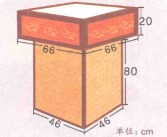

Date:2025/10/25.
Ordinal: 16.
正在加速。——厄运小姐
行程问题（二）——追及问题、环形跑道与多人变速
别急，先来顺便学习几个单词：
ｓ表示路程，来源于拉丁语中的spatium（[spætiəm]）；ｖ是英语的velocity（[və'lɒsəti]），表示速度；ｔ是time（[taɪm]），时间。
这次课学习更加“绕”的行程问题，需要列方程来解决。话不多说，开！！！
例⒈ 【自创】胡子拉每秒钟跑７米，快刀手每秒钟跑５米。快刀手从飞天村出发，胡子拉从黄海岛出发去追快刀手，他们同向而行。黄海岛距飞天村５００米。胡子拉什么时候能追上？

答案 从图中（当然是要你自己画的，题目不会自动附带）可以看得出来胡子拉比快刀手多跑了５００米。设ｔ秒后追上，
７ｔ＝５ｔ＋５００
ｔ＝２５０
所以２５０秒以后可以追上。
注意 同向而行表明是追及问题。解方程的算式写成５００÷（７－５），即追及时间＝路程差÷速度差这一基本公式。“速度差”还可以这样理解：即每秒钟追多少米。每秒钟追２米，５００米就需要２５０秒了嘛。
练习题 兄弟两人在一个周长６００米的水池边上玩。两人从同一地点出发，同向而行，哥哥每分钟走１００米，弟弟每分钟走５０米，再次相遇需多少时间？
例⒉ 甲、乙、丙三人步行的速度分别为每分钟１００米，８０米，７０米。甲、乙同在公路上Ａ处，丙在公路上Ｂ处，三人同时出发，甲、乙与丙相向而行，丙遇到甲２分钟后又遇到乙，Ａ，Ｂ间的距离是多少米？
思路 首先自然是画图：

从出发到甲与丙相遇的这段时间，甲比乙多走了３００米，这３００米是由乙与丙再过２分钟相遇算出来的。甲每分钟比乙多走２０米。那要多少分钟才能总共多３００米呢？当然是１５分钟啦！还是根据那个追及时间的公式。也就是说，甲和丙经过１５分钟相遇。Ａ，Ｂ间的距离就能算出来是１００×１５＋７０×１５＝２５５０（米）。
解法⒉ 设Ａ，Ｂ间的距离是ｘ米，则甲与丙需要ｘ
１００＋７０分钟后相遇，乙与丙需要ｘ
８０＋７０分钟后相遇。
ｘ
１００＋７０＋２＝ｘ
８０＋７０
解得ｘ＝２５５０。方程的思路甚至更加直白。
练习题 甲、乙、丙三人，每分钟分别行６８米、７０．５米、７２米。现甲、乙从东镇去西镇，丙从西镇去东镇，三人同时出发，丙和乙相遇后，又过２分钟与甲相遇。东、西两镇相距多少米？
例⒊ 小王家和小李家相距２４００米。每天晚饭后，他们都有散步的习惯。一天他们相约饭后同时出门，相向而行。小王每分钟走７５米，小李每分钟走８５米。小李出门时将家中的小狗也带了出来，这只小狗每分钟跑１４５米，它遇到小王后立即掉头跑向小李，遇到小李后又立即掉头跑向小王，遇到小王后又立即掉头跑向小李……就这样一直跑到两人相遇。这只小狗一共跑了多少米？

解答 这样的题，图中的线段是画不完的（即使是第三次相遇以后，注意观察，小王和小李的位置之间还是有一点空隙），因为小狗会与甲和乙相遇、转向“无数”次。你应该这样想，问题就很容易解决了：小狗一直都在奔跑，两人相遇花了多久，小狗就跑了多久。
两人相遇所需时间：２４００÷（７５＋８５）＝１５（分钟）
小狗跑的距离：１５×１４５＝２１７５（米）
练习题 Ａ，Ｂ两地相距４８０千米，甲、乙两车同时从两站相对出发，甲车每小时行３５千米，乙车每小时行４５千米，一只燕子以每小时５０千米的速度和甲车同时出发向乙车飞去，遇到乙车又折回向甲车飞去，遇到甲车又返回飞向乙车，这样一直飞下去。燕子飞了多少千米两车才能够相遇？（不要在意燕子怎么还没被累死。）
例⒋ 甲、乙两人在同一条椭圆形跑道上做特殊训练。他们同时从同一地点出发，沿相反方向跑。每人跑完第一圈到达出发点后，立即回头加速跑第二圈，跑第一圈时，乙的速度是甲的２
３，甲跑第二圈时速度比第一圈提高了１
３，乙跑第二圈时速度提高了１
５，已知甲、乙两人第二次相遇点距第一次相遇点１９０米，这条椭圆形跑道长多少米？

第１页，共３页
解答 设甲的起始速度是１５ｖ米每秒，则乙是１０ｖ，甲第二圈的速度是２０ｖ，乙第二圈的速度是１２ｖ。
设甲和乙第一次跑了ｔ秒后相遇，那么一圈的路程就是１５ｖ·ｔ＋１０ｖ·ｔ＝２５ｖｔ。
设乙第二圈跑的路程是ｓ（请翻到第２页），那么甲第二圈跑的路程是２５ｖｔ－ｓ，用一圈的总路程减去乙的嘛。甲和乙第二次相遇时，他们用的时间相等。从最初出发的时间点开始计算（请翻到第３页），那么
甲的总用时：２５ｖｔ
１５ｖ＋２５ｖｔ－ｓ
２０ｖ
乙的总用时：２５ｖｔ
１０ｖ＋ｓ
１２ｖ
他们的总用时是相等的，也就是说
２５ｖｔ
１５ｖ＋２５ｖｔ－ｓ
２０ｖ＝２５ｖｔ
１０ｖ＋ｓ
１２ｖ
ｓ＝２５
８ｖｔ
第一次相遇，甲跑的路程是１５ｖｔ，距离第二次相遇点１９０米。也就是说
１５ｖｔ－２５
８ｖｔ＝１９０
２５ｖｔ＝４００
诀窍 这种题要设第二次相遇的位置为未知数，根据甲乙走的时间相等来列方程。设未知数时，可一开始就设为某个字母的倍数，在一定程度上简化分数运算。
练习题 【自创】轮滑侠和运动客在同一条华山山道上锻炼。轮滑侠从山顶出发，操控轮滑速滑下山（纯属虚构，珍爱生命，请勿模仿）。运动客从山脚出发，跑步上山，他的速度只有速滑下坡的轮椅侠的３
１０。中途相遇后，他们都会继续前进，各自到达目的地时立刻掉头，原路返回。由于不能再滑行了，轮椅侠（很明显，把腿摔断了）上坡的速度变成了他下坡的１
２０。运动客下山则更轻松了，速度变为了他来山顶时的４
３。最终他们第二次相遇。两次相遇点距离１６８米。从山顶到山脚有多少米？
例⒌ 两辆汽车同时从东、西两站相向开出。第一次在离东站６０千米的地方相遇。之后，两车继续以原来的速度前进。各自到达对方车站后都立即返回，又在距中点西侧３０千米处相遇。两站相距多少千米？

点拨 第一次相遇，两车合跑了一个全程；只看第二次相遇，他们共跑了三个全程（如图，不是总共三根横线吗）。从第一次相遇到第二次相遇，两车又多跑了两个全程。注意他们的速度从来都没变过，因此第一次到第二次相遇所花的时间，就是第一次相遇所花时间的两倍。那么从东站来的车，它第二段的路程就是第一段的两倍，也就是１２０千米了。最后再利用上“中点西侧３０千米”的条件：从东站来的车一共跑了１８０千米，还差３０千米就是一个半全程了。一个全程就是一百四呗。
归纳 这一题学会的新技巧是速度不变，时间比＝路程比。关键点在于“第二次相遇一共走了三个全程”。
练习题 小克和小詹两人分别从Ａ，Ｂ两地同时出发，相向而行，他们第一次相遇时小克超过了中点２０米，相遇后他们继续前进，到达对方出发点后立即返回，在距Ａ地２４米处第二次相遇。请求出Ａ，Ｂ两地之间的距离。如果继续行走，第三次相遇距离Ａ地多少千米？（题中相遇均指迎面相遇）
以后每次课五道例题都会是常态了，好吧。不过下节课应该不会这么难了。主要是因为行程问题它是重点题型……
测验
题目⒈ 有甲、乙、丙三人，每分钟甲走８０米，乙走７０米，丙走６０米，甲从Ａ地，乙、丙从Ｂ地同时出发相向而行，甲和乙相遇后，过了５分钟又与丙相遇。问Ａ、Ｂ两地间的路程是多少？
题目⒉ 甲、乙两人同时从相距１８千米的两地出发，相向而行。甲每小时走３．５千米，乙每小时走２．５千米。与甲同时、同地、同向出发的还有一只狗，每小时跑５千米，狗碰到乙后就回头向甲跑去，碰到甲后又回头向乙跑去……这只狗就这样往返于甲、乙之间，直到二人相遇为止。则相遇时这只狗共跑了多少千米？
题目⒊ 某古建筑景点定做了２５个宫灯形的垃圾桶。垃圾桶外侧有一层外饰面。如果外饰面每平方米１８０元，这些垃圾桶的外饰面一共要花多少钱？

题目⒋ 甲、乙两人分别从Ａ，Ｂ两地出发，相向而行，出发时他们的速度比是３：２。他们第一次相遇后，甲的速度提高了２０％，乙的速度提高了３０％。当甲到达Ｂ地时，乙离Ａ地还有１４千米。那么Ａ，Ｂ两地间的距离是多少千米？
题目⒌ 小新用２０元钱买了５支圆珠笔和１２本练习本，剩下的钱若买一支圆珠笔少４角；若买一本练习本还少６角，则一支圆珠笔的价钱是多少？